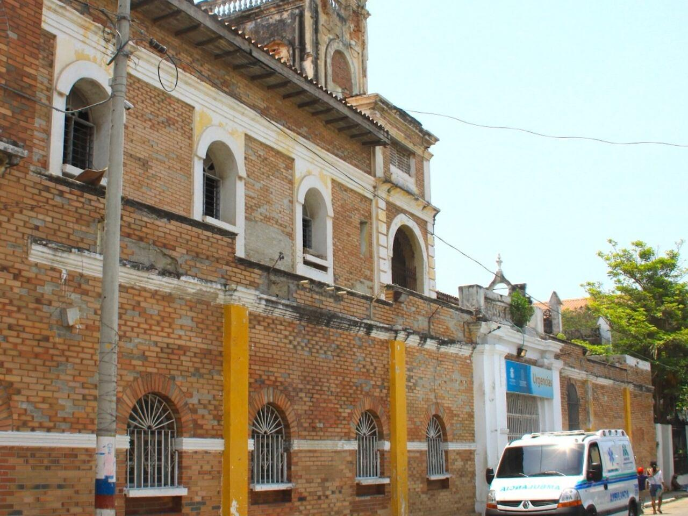

Hospital General de Barranquilla
Lugares Misteriosos / Historias paranormales

La historia
En el barrio San Roque de Barranquilla se encuentra uno de los escenarios más importantes de la historia médica de la ciudad: el antiguo Hospital General de Barranquilla. Sus instalaciones fueron testigo de más de un siglo de atención a pacientes, transformaciones arquitectónicas y acontecimientos que marcaron la evolución de los servicios de salud en el Caribe colombiano.
Los antecedentes de esta institución se remontan a finales del siglo XIX. En 1871, después de las dificultades sanitarias que enfrentaba Barranquilla y de diferentes iniciativas ciudadanas, se impulsó la creación de un hospital de caridad. La Sociedad Hermanos de la Caridad desempeñó un papel fundamental en este proyecto, que buscaba ofrecer atención a una población que necesitaba mejores servicios médicos.
El hospital comenzó a funcionar oficialmente el 20 de febrero de 1876, en una edificación ubicada en el sector que hoy corresponde al centro histórico de Barranquilla. Con el paso de los años, la institución amplió sus servicios y se convirtió en un referente de la atención médica regional. Durante diferentes etapas de su historia recibió a numerosos pacientes y enfrentó las dificultades sanitarias, sociales y económicas de la ciudad.
Su antigua arquitectura también guarda parte de su identidad. La edificación presentó características de los estilos republicano y colonial, con corredores, pabellones y espacios que reflejaban las formas de construcción hospitalaria de otras épocas. Una parte importante de su estructura fue construida antes de 1920 y posteriormente experimentó diferentes intervenciones y procesos de recuperación patrimonial.
La leyenda de la monja del hospital
Entre los relatos que rodean la historia del antiguo Hospital General de Barranquilla destaca la aparición de una misteriosa monja. Durante décadas, diferentes personas han contado historias sobre una religiosa que recorría los pasillos y pabellones del centro médico, especialmente durante las horas de la noche.
Según la tradición oral, la figura de la monja aparecía junto a los pacientes hospitalizados. Algunos relatos cuentan que se acercaba a sus camas y permanecía en silencio mientras rezaba por su recuperación. Después de terminar sus oraciones, desaparecía sin dejar rastro, como si nunca hubiera estado allí.
Una de las versiones más conocidas fue publicada por el cronista Carlos Herrera Delgans en abril de 2022. En su relato recoge testimonios y recuerdos de distintas generaciones sobre el supuesto espectro de la religiosa. También menciona la experiencia narrada por un médico que aseguró haber presenciado un encuentro inexplicable dentro de las instalaciones del hospital.
La historia también llegó a la radio internacional. En septiembre de 2011, el programa español Milenio 3, de la Cadena SER, presentó el testimonio de un médico colombiano que relató una experiencia paranormal relacionada con la leyenda de la monja del Hospital General de Barranquilla.
Entre la historia y lo inexplicable
¿Quién era aquella religiosa? ¿Se trataba del recuerdo de alguna de las monjas que dedicaron su vida al cuidado de los enfermos o de una historia que fue creciendo con el paso de los años? Son preguntas que alimentan la curiosidad alrededor de esta leyenda.
Aunque no existen pruebas que confirmen la aparición sobrenatural, el relato permanece en la memoria popular de Barranquilla. Los antiguos pasillos, las historias de los pacientes y el recuerdo de las religiosas que trabajaron en el hospital forman parte de una narración que mezcla la historia de la medicina con el misterio.
Actualmente, el lugar continúa siendo parte de la infraestructura pública de salud de Barranquilla, con procesos de modernización y recuperación de su patrimonio arquitectónico. Su historia demuestra que algunos lugares no solamente conservan recuerdos de quienes los habitaron, sino también relatos que continúan despertando preguntas entre quienes se interesan por los fenómenos paranormales.
Fuentes
Universidad Simón Bolívar. (2000). Historia del hospital de Barranquilla entre 1871 a 1950.
Consultar investigaciónBarrios Mendoza, C. A. (2014). Rehabilitación del hospital general de Barranquilla: Para el rescate y conservación del patrimonio arquitectónico de la ciudad. Revista Módulo, Universidad de la Costa.
Consultar investigaciónHerrera Delgans, C. (2022). Un fantasma ronda el Hospital General de Barranquilla. En Guardia.
Consultar relato paranormalCadena SER. (2011). Milenio 3: Un extraño encuentro. Testimonio sobre la leyenda de la monja del Hospital General de Barranquilla.
Escuchar y consultar relatoAlcaldía de Barranquilla. (2020). CAMINO Nuevo Barranquilla, antiguo Hospital General, beneficiará a 80.000 usuarios.
Consultar fuente